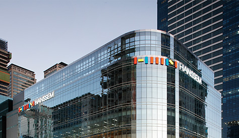
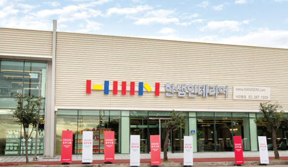
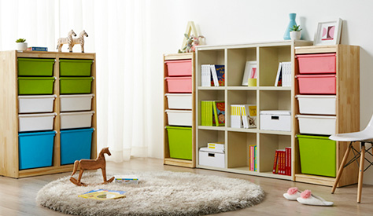
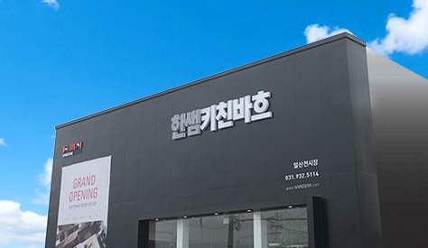
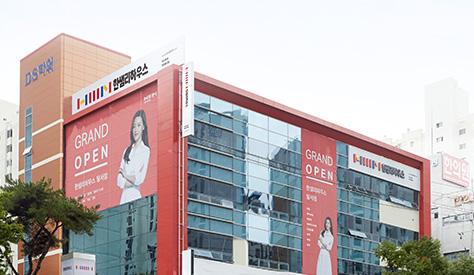
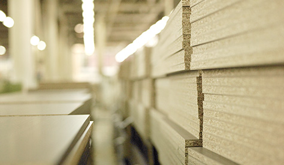

한샘 본문 영역

- 메인화면 >
- 기업소개 >
- 경영방침
한샘을 만날 수 있습니다
-

직매장사업부
한샘직매장은 국내 최대 규모
한샘플래그샵 안내
토탈홈인테리어 전문매장으로 가구, 부엌,
생활용품을 원스탑 쇼핑할 수 있는 본사 직영매장입니다.
1997년 한샘인테리어 가구 사업의 런칭과 함께 시작된 직매장(플래그샵)
사업은 방배점, 논현점, 분당점으로 확대되었고 2009년 잠실점에 이어
2011년 부산센텀점, 2014년 목동점을 오픈하였습니다. -

인테리어 대리점사업부
한샘인테리어 대리점은 수도권 및 지방상권의 지역밀착형 매장으로 고객의
한샘인테리어 대리점 안내한샘인테리어 개설문의
니즈에 맞게 공간 인테리어 패키지를 제안합니다.
대형대리점에서는 가구 뿐 아니라 생활용품까지 원스탑으로 쇼핑할 수 있습니다.
상권 내 타 브랜드보다 월등한 매장 경쟁력과 영업경쟁력, 상품경쟁력으로 고객을
감동시키는 지역 대표 인테리어 전문매장입니다. -

온라인사업부
2008년 출범한 한샘온라인사업부는 국내 최고 홈인테리어 전문몰인 한샘몰을
한샘몰 바로가기
중심으로 성장하고 있습니다.
한샘몰은 고객의 니즈를 만족시키는 히트상품을 개발하고 외부 우수한 브랜드를
적극적으로 입점시킴으로써, 온라인 사업에 최적화된 상품 '컨텐츠 마케팅'
서비스를 제공하고 있습니다. -

KB사업부
한샘KB사업부는 최고급 부엌가구 브랜드인 ‘키친바흐(KITCHEN BACH)’를
키친닷컴 바로가기
중심으로 대형 표준매장을 확대하고, 차별화된 전시, 판촉, 서비스를 제공함으로써
지속 성장하고 있습니다. 최고의 품격과 가치를 드리는 키친바흐 제품, 평형별
그레이드에 맞는 플랜 제안, 세계최고의 독점 수입 브랜드 기기는 한샘
KB사업부만이 갖는 경쟁력입니다. -

ik사업부
한샘ik사업부는 전국 우수 인테리어점과 제휴를 맺고 인테리어 리모델링에
한샘ik닷컴 바로가기
필요한 최고의 상품과 서비스를 합리적인 가격에 제공하고 있습니다.
한샘ik의 다양한 아이템과 확실한 시공AS서비스, 우수 인테리어 업체의 경험과
노하우를 통해 합리적인 인테리어 리모델링 솔루션을 제공합니다. -

특판사업부
한샘특판사업부는 대단위 공동주택, 호텔, 리조트 등 신축과 재건축, 리모델링
시장에서 우량건설업체와 시행사를 대상으로 부엌, 수납가구 관련상품, 기기 등을
공급하고 있으며, 차별화된 제품과 디자인, 물류 시공 부문의 노하우를 기반으로
새로운 B2B영역으로까지 확대 성장하고 있습니다. -
해외법인
한샘은 주거환경 부문 세계 최강 기업이라는 비전을 당성하기 위해
중국, 일본, 미국 해외법인을 중심으로 적극적인 해외시장 공략을 펼치고 있습니다.
중국에서는 북경에서 생산 설비를 갖추고 신축 아파트를 중심으로 부엌 가구를
공급하고 있으며 B2C시장에 진입하기 위해 준비 중에 있습니다.
일본 오사카에는 사무실 및 쇼룸, 도쿄에 지부를 두고 부엌가구를 공급하고 있으며,
미국 법인은 미국 뉴저지에 캐비닛 생산 공장을, 보스턴에서는 쇼룸을 운영하고
있습니다.